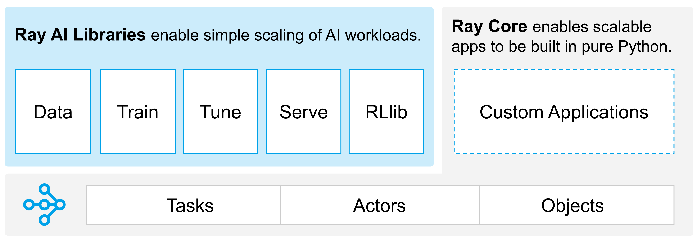

What is Ray?
Ray is an open-source framework designed to simplify the development of large-scale machine learning (ML) and big data applications by providing a robust layer for parallel processing. This means it allows you to run multiple computations at the same time, making your programs faster and more efficient.
Key Features of Ray
Data Preprocessing (Data Module):
Ray helps you manage and preprocess large datasets efficiently. By breaking down the data processing tasks into smaller, parallel tasks, it speeds up the data preparation stage, which is crucial for machine learning.
Distributed Training (Train Module):
Training machine learning models can be time-consuming, especially with large datasets. Ray's Train module allows you to distribute the training process across multiple machines, significantly reducing the time it takes to train a model.
Hyperparameter Tuning (Tune Module):
Finding the best hyperparameters for your ML model is essential for optimal performance. Ray's Tune module automates this process, running multiple experiments in parallel to find the best combination of hyperparameters efficiently.
Model Serving (Serve Module):
Once your model is trained, you need to deploy it so that it can be used to make predictions in real time. Ray's Serve module provides a scalable and efficient way to serve your models, handling large numbers of requests without compromising performance.
Reinforcement Learning (RLib Module):
Ray also supports reinforcement learning (RL), a type of machine learning where an agent learns to make decisions by interacting with its environment. The RLib module offers tools and libraries to develop and train RL algorithms in parallel, speeding up the learning process.